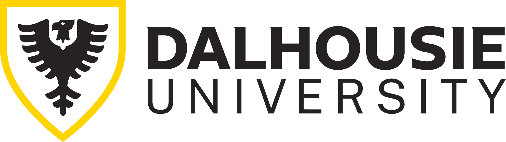

Education

Bachelor of Management specialization in Data and Information Systems
Minor in Computer Science
Certificate in Quantitative Finance
Educated with skills to enhance business value
My academic journey spans a diverse set of courses—ranging from Java development, web design, and data structures to financial management, derivatives, and quantitative research. This interdisciplinary training sharpens my ability to connect dots across domains, identify operational inefficiencies, and design tech-enabled solutions that create measurable business value. With a strong passion for AI tools and automation, I'm continually evolving—but above all, I learn fast.
“The most impactful innovators are not the ones who go deep in one thing — they are the ones who connect things no one else sees.” — by Steve Jobs, 2005 Stanford Commencement